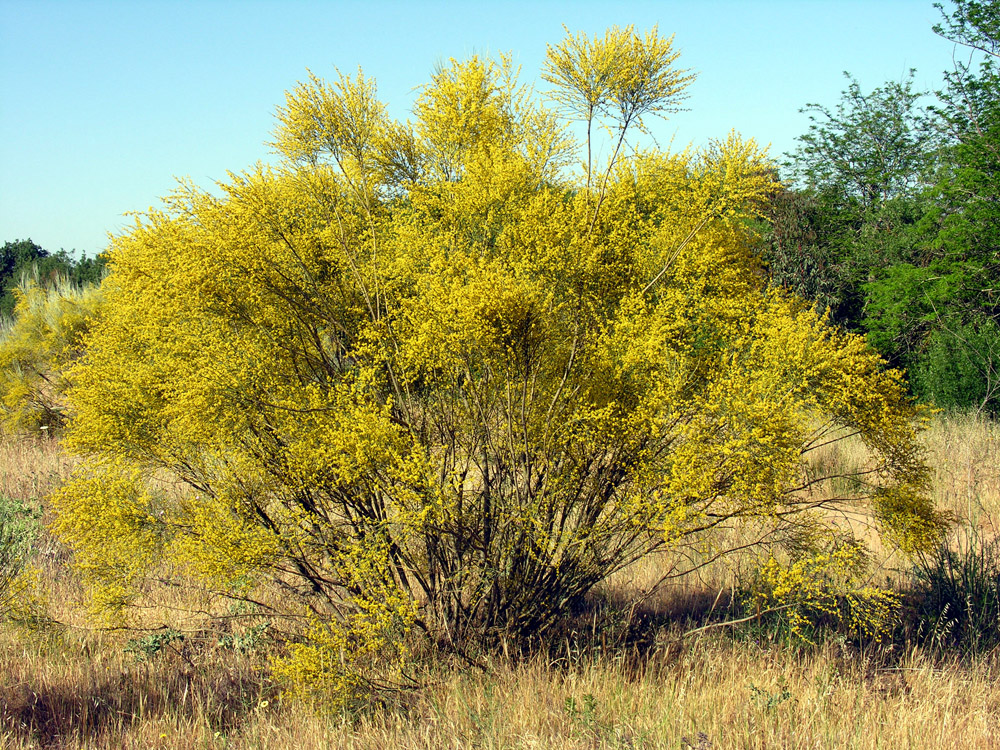

Ayuntamiento de Senés
JARDIN BOTANICO DE ESPECIES AUTOCTONAS DE SENES

Retama sphaerocarpa

La retama de flor amarilla (Retama sphaerocarpa) es un arbusto perenne muy característico de las zonas áridas y semiáridas del ámbito mediterráneo. Destaca por su porte abierto y por su espectacular floración amarilla que cubre la planta durante la primavera.
Puede alcanzar entre 1,5 y 3 metros de altura, con ramas largas, delgadas y de color verde, que realizan la función fotosintética. Sus hojas son muy pequeñas y efímeras, adaptadas a minimizar la pérdida de agua en ambientes secos.
La retama de flor amarilla es propia de regiones mediterráneas secas, donde crece en laderas, campos abiertos y terrenos degradados. Es frecuente en suelos pobres, arenosos o pedregosos.
En la Sierra de los Filabres, forma parte del matorral característico, contribuyendo a la estabilidad del suelo y a la recuperación de zonas degradadas.
La retama ha sido utilizada tradicionalmente por sus propiedades medicinales, especialmente como diurética y depurativa. También ha tenido usos en medicina popular, aunque con precaución debido a la presencia de compuestos activos.
Además, presenta un importante valor ecológico, ya que mejora el suelo mediante la fijación de nitrógeno, favoreciendo el crecimiento de otras especies.
La retama simboliza la resistencia y la renovación, debido a su capacidad para florecer de forma espectacular en ambientes áridos.
Su intensa floración amarilla se asocia con la luz, la vitalidad y la llegada de la primavera en paisajes secos.
En Senés, la retama durante los años cuarenta y cincuenta, era una riqueza y daba mucha mano de obra, la rozaban transportaban en camiones y carros a la ciudad, donde se usaban para calentar los hornos.
Se utilizaba para los cálculos renales, mediante infusión de sus flores secas. Se ha utilizado para ciatica, reumatismo, diabetes, parásitos intestinales, diarrea, inflamación de la prostata, fatiga, estreñimiento, pero siempre con la atención de un experto ya que es una planta muy tóxica.
La retama de flor amarilla florece en primavera, cubriéndose de numerosas flores amarillas que destacan en el paisaje y atraen a insectos polinizadores.
Durante la floración, la retama puede cubrirse completamente de flores, hasta el punto de ocultar sus ramas, creando un efecto visual muy llamativo.
Es una planta clave en la recuperación de suelos degradados, gracias a su capacidad para mejorar las condiciones del terreno.